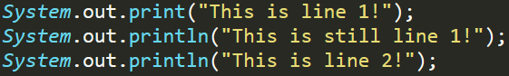

General
When making applications we generally need some degree of interaction with the user, and one of the most basic methods of achieving this level of interaction is to handle the program's inputs and outputs via the terminal.
Printing
When we want to show the user some piece of information via the terminal in these simple applications we make use of our ability to print to the console. The Syntax to print the String, "Hello!" to the console, in Java, is:

With this basic instruction that we are now able to use we've gained a lot of potential in creating simple applications in Java however we're still very restricted on what we can make as we can't actually interact with the user quite yet. However, once we cover collecting inputs from the User our program can get exponentially more complex and interactive.
It should be noted that the bit that's being printed, in this case Hello!, is a string which is why it's encased within speechmarks.
It should be noted that the above print syntax places a new line at the end of the text displayed automatically. This can be avoided if needed however by using an alternative syntax of the instruction. We simply remove the ln (Which is indicative of line) and instead put:

By using a mixture of the two print statements we can start formatting text together a bit to make things a bit more aesthetically pleasing/easier to use for the user. In order to further demonstrate this we can run the following piece of code:
Which would produce the following output:
This is line 1! This is still line 1!
This is line 2!
Inputs
In order to make an interactive application we need to be able to take inputs from our user. We can do this via the console, in Java, by using the Scanner.
So, in order to create a scanner object, named sc, we use the following piece of code:
So here we've created a new instance of the Scanner class and called it sc. However, the Scanner isn't exclusively for terminal applications so we need to place System.in within the parenthesis in order to tell it that we're going to be entering data via the terminal
Now that the Scanner object has been created (Technical term is instantiated) we're free to use it! So, if we were going to make a simple application that would ask the user for their name and then print it back to them we would write the following code:
Line 1 creates the scanner item in order to read text inputted via the program's terminal.
Line 2 creates a String variable (Variables and data types will be covered further in variables) and assigns a value that's inputted by the user from the Scanner.
Line 3 then prints the string "Hello, " and adds the value of the variable that we defined and assigned on line 2.
If I were to run this program and enter my name, Mitchell, then the following output will be displayed:
Hello, Mitchell
Prompting Inputs
When we used the scanner in the previous piece of code it wasn't very informative or user friendly. We only knew we were supposed to enter our name because we wrote the code with that intention. If we were to give the same program to someone else to use then they'd be presented with a blank prompt and they'd have no idea what they're supposed to enter. In order to resolve this we can use prompts to instruct the user what they're supposed to enter, like for example "Please enter your name: ". Which instructs the user what they're supposed to do.
If we add the following line of code above our previous code:

Now instead of having a blank screen when the user is expected to enter their name, a piece of text will appear prior to this instructing the user to enter their name. Once we start typing it will appear after the string we've printed because we didn't include the new line part of the print statement.